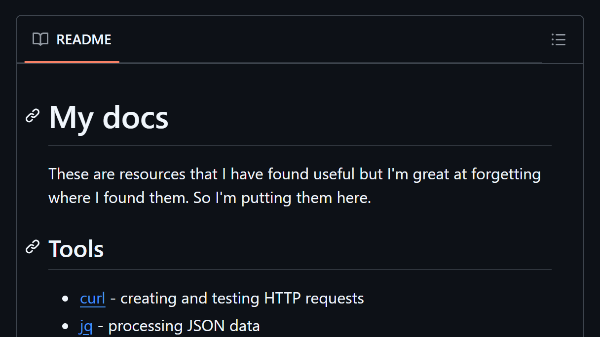

FunStuff.zifcak.dev
To learn more about me visit zifcak.dev

Scheat sheet / docs
These are resources that I have found useful, interesting or funny but I'm great at forgetting where I found them. So I created this cheat sheet or doc to keep track of them
Multiwindow Tracking
Open multiple instances of your browser, drag them arond and see what will happen. Fun thig that's possible that I saw somewhere and wanted to replicate.

Svg lines
Create dots, create lines between them and move them around. Simple thing written in plain JS.